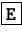
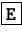
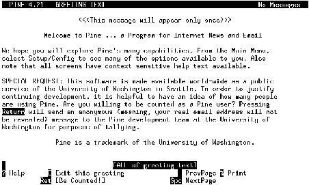
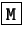
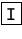
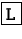
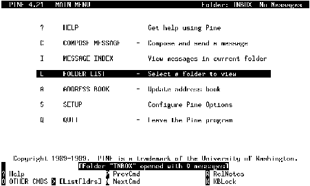

Next: Configuración básica
Up: Uso de clientes de
Previous: Uso de clientes de
Índice General
La mayoría de las distribuciones (excepto Debian, virtualmente todas)
incluyen este programa de correos. Es un cliente de correo y grupos de
noticias muy avanzado, que posee una enorme cantidad de opciones.
La primera vez que el usuario ejecute el pine, el programa
se iniciará con una pantalla como se muestra en la figura
3.1, donde se explica que
este programa se mantiene en la Universidad de Washington y el
proyecto sigue funcionando en la medida que aquellas personas sepan
que el programa se utiliza, es por eso que se le pide al usuario
oprimir  para ser contado entre los usuarios de
pine. Si uno no quiere ser contado, puede salir de esa
pantalla pulsando la tecla , esa pantalla no se volverá a
mostrar otra vez.
para ser contado entre los usuarios de
pine. Si uno no quiere ser contado, puede salir de esa
pantalla pulsando la tecla , esa pantalla no se volverá a
mostrar otra vez.
Figura 3.1:
Pantalla inicial del pine
|

|
El pine dividide su área de trabajo en dos: la parte
inferior, que funciona a modo de barra de menú, y la parte superior
toma varios formatos dependiendo de la sección donde se encuentre el
usuario. En la barra de menú, se irán mostrando las diferentes
funciones y sus teclas asociadas, como generalmente existen en cada
sección mas opciones que lugar físico donde distribuirlas, pulsando la
tecla  se mostrarán mas comandos. Aquella función que
aparezca encerrada entre corchetes, es la que se ejecutará por defecto
al pulsar .
se mostrarán mas comandos. Aquella función que
aparezca encerrada entre corchetes, es la que se ejecutará por defecto
al pulsar .
Una vez que se ha salido de la pantalla de bienvenida, aparecerá la
pantalla principal, o Main Menu, se puede acceder a la pantalla
principal desde las demás secciones del programa pulsando .
Como vemos en la figura
3.2, la pantalla
principal se divide en varias secciones:
- HELP
- Es el sistema de ayuda del pine, posee toda la
documentación en línea explicando cada detalle del programa, es
realmente recomendable utilizar esta ayuda para descubrir todas las
posibilidades que provee este cliente de correo
- COMPOSE MESSAGE
- Mediante el uso de esta opción desde la
pantalla principal o pulsando
 desde otras secciones, el
programa activa su modo de edición para enviar un mensaje nuevo.
Esta funcionalidad la veremos mas adelante.
desde otras secciones, el
programa activa su modo de edición para enviar un mensaje nuevo.
Esta funcionalidad la veremos mas adelante.
- MESSAGE INDEX
- Si seleccionamos esta opción, iremos al índice de
mensajes de la carpeta que tengamos seleccionada. Apenas arranca el
programa, la carpeta por defecto es INBOX, pero se pueden
agregar carpetas adicionales para organizar los mensajes por
temática. Esta opción puede accederse en otras secciones del
pine pulsando la tecla . El manejo de carpetas
también se verá con en detalle mas adelante.
- FOLDER LIST
- Esta opción lleva al usuario al índice, pero de las
carpetas que existan en el programa, la tecla  activa esta
opción.
- ADDRESS BOOK
- Para evitar tener que recordar grandes cantidades
de cuentas de correo, o tener que escribirlas en papeles que siempre
luego se pierden, el programa posee esta funcionalidad a modo de
libreta de direcciones. En ella se pueden configurar además listas
de distribución, ya se verá mas adelante como funciona.
- SETUP
- Seleccionando esta opción se ingresa a un submenú con
varias posibilidades de configuración y personalización del
pine. Mas adelante se verán algunas de las opciones de
configuración mas importantes.
- QUIT
- Esta opción es mas que obvia, se utiliza para salir del
programa, en otras secciones del mismo, pulsando
 se
activa.
se
activa.
Figura 3.2:
Pantalla principal del pine
|

|
Subsecciones
Next: Configuración básica
Up: Uso de clientes de
Previous: Uso de clientes de
Índice General
Proyecto Cursos - LuCAS - http://lucas.hispalinux.es/htmls/cursos.html